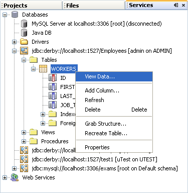
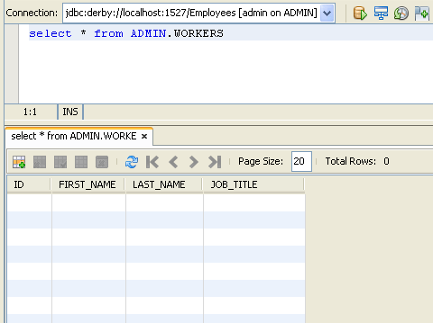
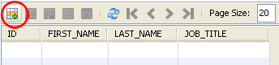
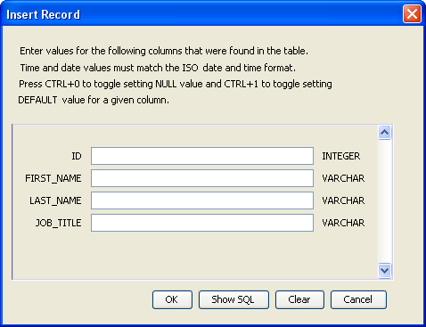
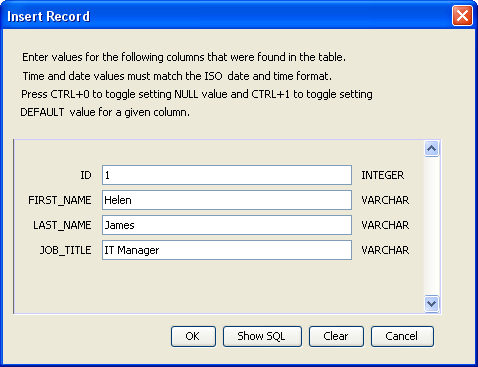
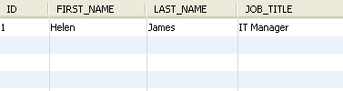
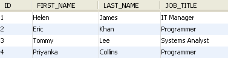

>Adding Records to a Java Database Table
A database table is like a spreadsheet, in that it has rows and columns. Each row in our table has cells (fields) for an ID value, a First Name, a Last Name, and a Job Title. Shortly, you'll learn how to write code to add new rows of information to the table. But you can use the NetBeans IDE to add rows as well.
To add a new row to your table, right click on your table name. From the menu that appears, select View Data:

When you click on View Data, you'll see a new window appear in the main NetBeans window

You use the bottom half of window to enter new table rows. The top half is for SQL Commands. (You'll learn more about them soon, when we've finished adding rows.)
To add a new row, click the icon with the green plus symbol, in the bottom half of the window:

When your click the new row icon, a dialogue box appears:

As you can see, there are text boxes for each column in our table. For the ID column, we'll use sequential numbering, starting with 1. The second row in the table will then have an ID of 2, the third row 3, etc. The numbers are not the row numbers: they are just unique values for each ID field. We could have easily started with a value of 100 as the first ID number. The second number would then be 101, the third 102, etc.
Enter the following data as the first row of your table:
ID: 1
First Name: Helen
Last Name: James
Job Title: IT Manager
Your dialogue box will then look like this:

Click OK when you're done and you'll be returned to the NetBeans window. The first row should then be displayed:

Add three more rows with the following data:
ID: 2
First Name: Eric
Last Name: Khan
Job Title: Programmer
ID: 3
First Name: Tommy
Last Name: Lee
Job Title: Systems Analyst
ID: 4
First Name: Priyanka
Last Name: Collins
Job Title: Programmer
When you've finished adding the new rows, your NetBeans window should look like
this one:

In the next lesson, you'll a few SQL commands.